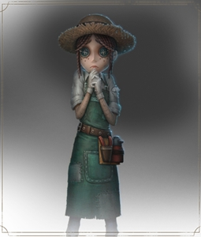

園丁
【人物介紹】
名字：艾瑪‧伍茲
已經找到了那個特別的"唯一”，現在艾瑪終於能夠安心地使用自己完美的園藝技巧和才藝了。也許親愛的稻草人先生還需要一些修飾，換掉那些腐壞的深棕色茅草，再加上一頂新的帽子。當然，她從來不是只看外表的女孩。不過，嘿，裝飾你的夢中情人有什麼問題？只要擁有足夠的金錢就行。
【能力介紹】
巧手匠心：隨身攜帶工具箱，可破壞的狂歡之椅，可破壞的椅子數目越多，破壞速度越快。
機械熟識：具維修技術，觸發校準成功判定範圍增大50%，校準觸發概率降低50%。
安全感：在狂歡之椅上堅持時間增加10%。
莊園老友：參與過遊戲的老手，比新人更警覺，每次受擊後獲得的加速時間延長2秒。
園丁是初始角色之一，初始道具為工具箱，可拆除場上的狂歡之椅，若使用的好可以讓監管者找不到狂歡之椅，增加隊友的逃生機會，但拆除狂歡之椅時也會暴露自身位置給監管者知道。
